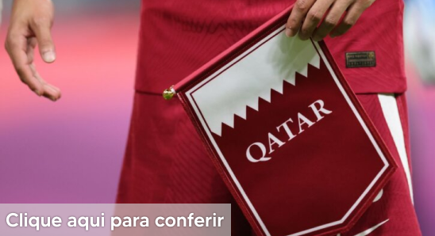
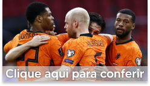
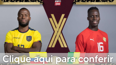
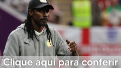

Catar é a primeira seleção eliminada do Mundial. Os anfitriões perderam para o Senegal, por 3 a 1. A eliminação se concretizou após o empate por 1 a 1 entre Holanda e Equador. Confira uma breve explicação à respeito da seleção.


Ao vencer o jogo contra os Estados Unidos, Holanda vai disputar as quartas de final de uma Copa do Mundo pela sétima vez na história. Confira algumas infos sobre o país.

Em busca de uma vaga nas oitavas de final, o Equador enfrentou o Senegal na última rodada da fase de grupos. A Seleção equatoriana foi eliminada da competição após Senegal ganhar.

Jogando nas oitavas de final, Senegal perdeu para Inglaterra por 3 x 0. A seleção senegalesa, que participa de sua terceira edição da Copa, perdeu para a seleção inglesa.